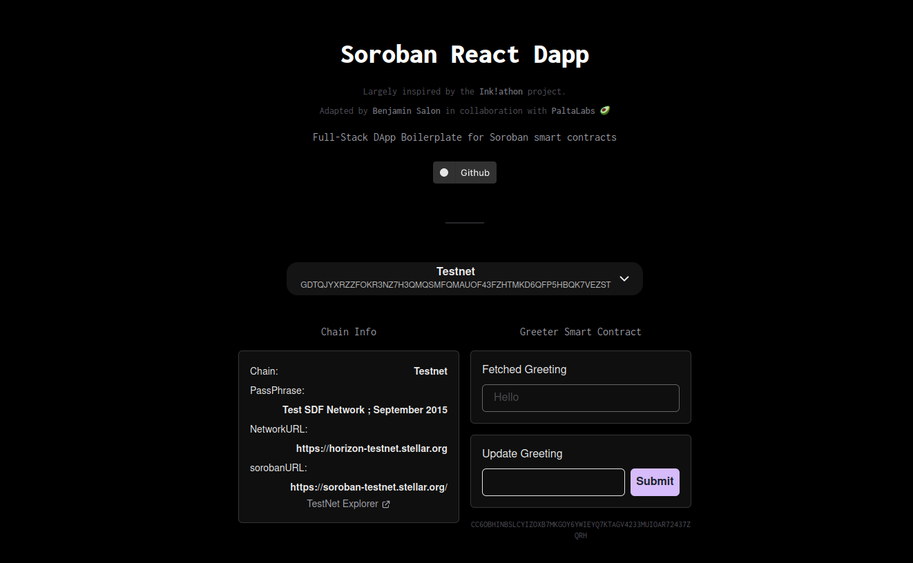

A script and a boilerplate
@create-soroban-dapp is both a npx script and a boilerplate dapp for kickstarting any of your ideas for a Soroban-based Dapp.
Largely inspired by the ink!athon project by Scio Labs and by @create-t3-app by T3 Open Source for the script mechanisms.
Check the LIVE VERSION of the dapp utilizing already deployed testnet contract!
Structure
@create-soroban-dapp is composed of two things:
-
A boilerplate dapp utilizing the @soroban-react.
-
A npx script allowing any developer to quickstart its project via the command line and
npx create-soroban-dapp. Using the script will help them set up the boilerplate dapp.
Usage
Open a terminal in the folder of your choice and simply use
npx create-soroban-dapp@latest
or
npm create soroban-dapp@latest
Then, cd inside the new project repository.
Manual cloning
It is also possible to use the dapp boilerplate via manually cloning the repo:
git clone git@github.com:paltalabs/create-soroban-dapp.git
The dapp will then not be in the root folder, this folder is occupied by the npx script. You will find the dapp in the sub folder 'soroban-react-dapp':
cd soroban-react-dapp
From there, it is a normal nextjs app:
yarn or npm install or pnpm install
Note: Using this technique you will clone also the npx script which will be of no use for you. You can only keep the subfolder
soroban-dappcontaining the nextjs project.
Troubleshooting
The script in its early stage is likely to not function perfectly on every different os and configuration. If the script happens to not function properly please report to @benjaminsalon on the stellar developer discord channel.
Welcome to your soroban react dapp boilerplate!
This dapp largely inspired by the ink!athon project will help you kickstart your soroban dapp creator journey.

Getting started
If it's not done already, you will need first to run the create-soroban-dapp script.
If you prefer it is also possible to clone the boilerplate repo manually.
We now suppose you ran the initialization script and that you have a folder containing the soroban-dapp next.js project.
The customization of the dapp will be done following these steps:
- Verify Installation
- Customize app data
- Create and build your own contracts
- Deploy your contracts on tesnet
- Retrieve contract object in the front-end
Good luck building!
Verify Installation
Run the app on a local server
To verify that everything is in order, open a shell in the nextjs soroban-dapp folder, and run
# If you use yarn
yarn dev
# If you use npm or pnpm
npm run dev
pnpm run dev
This will start the development server. The dapp will be available on localhost.
The dapp should display the current greeting set in the testnet smart contract.
If you encounter an error, make sure you have installed the dependencies of the project!
Try the dapp
Connect your wallet and check if you can interact with the dapp by sending a new greeting!
You may need some tokens from the faucet to interact with the testnet.
You can fund your wallet address with the testnet friendbot at
https://friendbot.stellar.org/?addr=YOUR_ADDRESS_HERE
Customize app data
You can start by modifying the TODOs with your own data (None of them is mandatory to change):
- Name of the package in package.json.
- All the dapp info in _app.tsx.
- Manifest and favicon in _document.tsx.
Manage contracts
The soroban dapp boilerplate comes with an carefully thought contracts organization and scripts which will allow you to manage your contracts compiling, deployment and integration in a simple way.
To see the details and how to use it see
- Contract folder organization
- Create and build contracts
- Deploy using the script
- Retrive the contract object in frontend
Contract folder organization
Create and build your own contracts
The contracts workflow happens in the contracts/ folder. Here you can see that the greeting contract is present already.
Every new contract should be in its own folder, and the folder should be named the same name as the name of the contract in its cargo.toml file. You can check how the tweaked_greeting contract is changed from the greeting contract and you can also start from this to build your own contract.
To build the contracts you can simply invoke the make command which will recursively build all contracts by propagating the make command to subfolders. Each contract needs to have its own Makefile for this to work. The Makefile from the greeting contract is a generic one and can be copied and paste to use with any of your new contract.
If you are not familiar or comfortable with Makefiles you can simply go in the directory of the contract you want to compile and run
# This will create the target wasm blob under target/wasm32-unknown-unknown/release/contract_name.wasm
cargo build --target wasm32-unknown-unknown --release
If it's your first time manipulating soroban contracts you might need to add the
wasm32-unknown-unknowntarget to rust. For this runrustup target add wasm32-unknown-unknown.
Follow instructions you find online if not working ( search for "add target wasm32-unknown-unknown to rust" ).
Deploy your contracts using the provided script
Now that you have added your contract to the project, you can deploy the contract to the soroban testnet.
To do so you can use the script provided in the contracts folder: deploy_on_testnet.sh. You simply have to add your contract name as argument like this
# From the contracts folder run
./deploy_on_testnet.sh name_of_your_contract
The script also takes a list of contracts as arguments for deploying several contracts at once with the same identity. Simply use
# Deploy several contracts like this
./deploy_on_testnet.sh contract_1 ontract_2 contract_3
Under the hood the script will
- Run
makeanyway to ensure that the contracts are up to date from your last modification- Add the testnet network configuration to soroban-cli
- Create a random identity for the deployer of your contracts (be aware that this will change every time you redeploy)
- Fund the deployer identity using Friendbot
- Deploy the contracts on testnet
- Add the contracts addresses in
contracts_ids.jsonundertestnet.name_of_your_contract
Retrieve the contract object in the frontend
In the file GreeterContractInteraction.tsx, change the two references to "greeting" in updateGreeting at line 105 and in fetchGreeting at line 55.
You then need to adapt the contractInvoke() calls in these functions to match the structure of your contract, by setting the right method name and the right args list.
Finally feel, of course, free to change the front-end how you wish, to match your desired functionalities.
Fly with your own wings
You are now normally all set! This is your time to shine and show your mastery of Rust and React to build the best dapp!
The idea is for you to inspire yourself from the two methods implemented in the boilerplate (one getter, one setter) to now connect to your own smart contracts and craft the adequate frontend.
Wishing you good luck
SOROCHAT dapp tutorial
SOROCHAT is a nice little messaging dapp built using create-soroban-dapp for demonstration purpose.

Submitted and awarded for the Sorobounties 2024.
Tutorial on Dev.to
You can find a written tutorial explaining how to create the dapp on dev.to 🚀